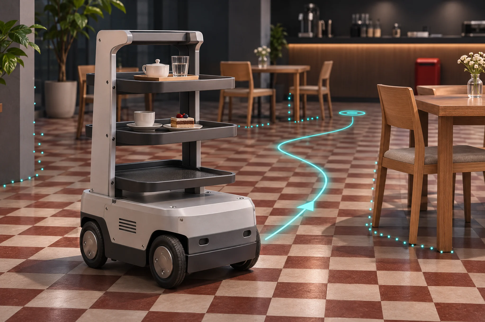
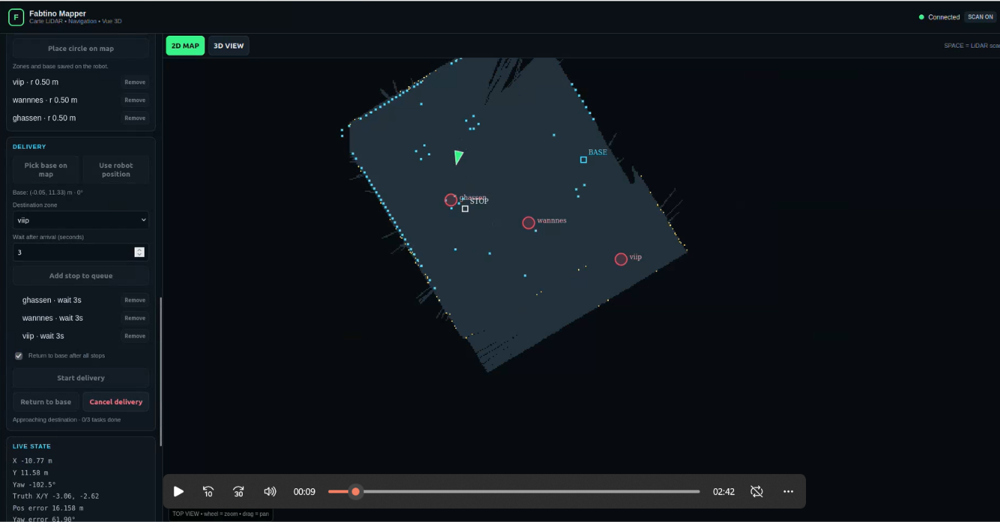

TOR 4.0 · Autonomous Navigation
Autonomous robot navigation and delivery using ROS 2, LiDAR mapping and route planning in a Webots café simulation. Our team earned 4th place at TOR 4.0.

From sensing to navigation
The Fabtino system connects a Webots robot simulation to ROS 2 and a web dashboard. Wheel encoders, an IMU and LiDAR support localization and mapping, giving the robot an estimated position within its environment.

Planning delivery missions
An A* planner finds routes around obstacles and denied zones. Delivery missions combine ordered stops, arrival delays and a return to base, with a safety supervisor checking movement commands.
A dashboard for the operator
The browser interface supports manual driving, map import and export, destination placement and delivery scheduling. Live telemetry connects the operator’s controls with the simulated robot.
Fourth place at TOR 4.0
Our team placed fourth in TOR 4.0. The repository includes the navigation system, simulation setup and a video demonstration.